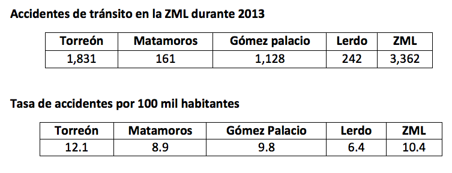
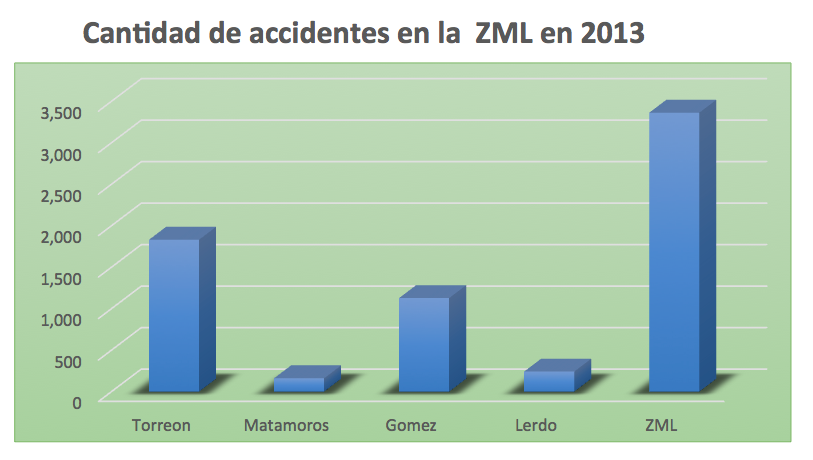
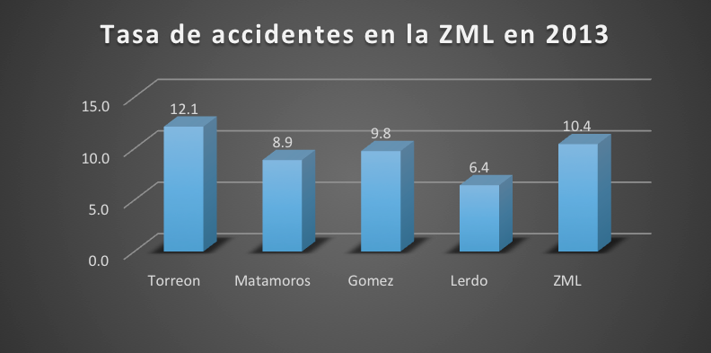

La cultura vial se refiere a la construcción de una convivencia armoniosa, responsable y de respeto entre todos los que hacemos uso de las vías de tránsito, sean estas aceras, rutas, caminos, ciclo vías, etc.
También hace referencia al hecho de que comprendamos cuales son nuestros deberes y derechos en el uso de estas vías, sobre todo porque cualquiera de nosotros, en cualquier momento puede jugar un rol de conductor, ciclista, motociclista, peatón o aún más, de un peatón con capacidades diferentes.
De esta manera, la cultura vial hace referencia a los comportamientos humanos en las vías, en los espacios de movilidad, no juzga si son correctos o incorrectos, lo que importa es la manera en que las colectividades se expresan en esos espacios.
En este sentido la cultura vial se relaciona con la seguridad vial, esta última hace referencia a la manera en que podemos atender los riesgos en las vías, a la forma en que enfrentamos dichos riesgos para prevenir accidentes o bien, que el impacto en vidas humanas sea mínimo.
Podemos decir entonces que la manera en que nos comportamos en las distintas vías, provocará un mayor o menor número de riesgos en la interacción con los otros y estos riesgos serán mínimos o no de acuerdo a la manera en que nos movamos o nos comportamos.
Si bien es cierto que la cultura vial aporta una serie de aspectos importantes en cuanto al comportamiento adecuado en las vías, es fundamental entender que estos planteamientos, están orientados a la seguridad vial, es decir, a la prevención de accidentes de tránsito o la minimización de sus efectos, especialmente para la vida y la salud de las personas.
En lo que respecta a la Zona Metropolitana de la Laguna (ZML) los accidentes han tenido un comportamiento diferente, que si bien es cierto, en algunos municipios no es preocupante, en otros como Torreón y Gómez Palacio no deja de llamar la atención la cantidad de los mismos.
  De la mayor proporción de accidentalidad en los municipios de Torreón y Gómez Palacio, se puede inferir que se da toda vez que dichos municipios reciben diariamente el mayor número de automovilistas de los municipios vecinos, sin que el territorio ni la ingeniería e infraestructura vial sean suficientes para ello, lo cual se sustenta en los flujos de la movilidad laboral previamente documentados. (Ver Gutiérrez Arizpe 2014).
Podemos concluir que como en muchos otros aspectos de la zona metropolitana de la laguna, es impostergable la construcción, implementación y seguimiento de una política pública sobre seguridad vial encaminada a la protección de la vida humana.